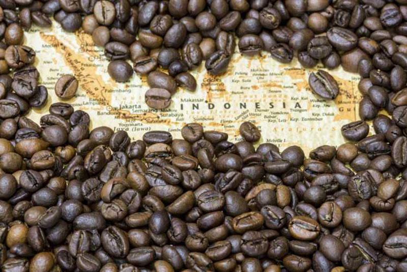
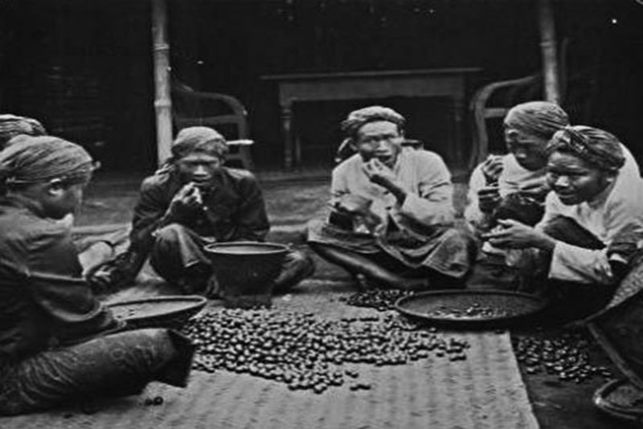
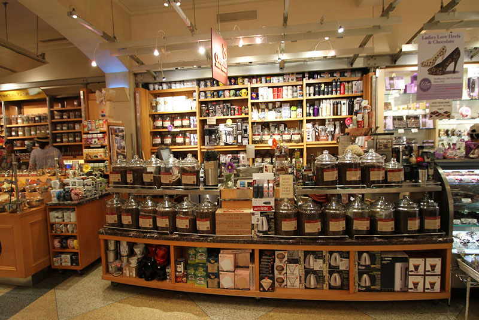
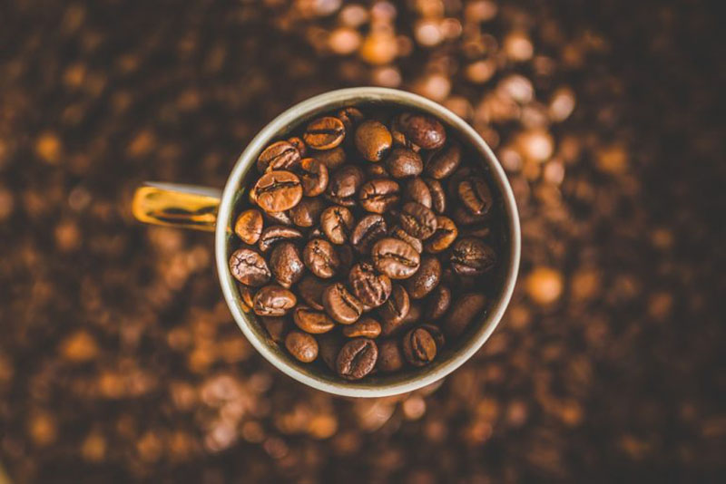
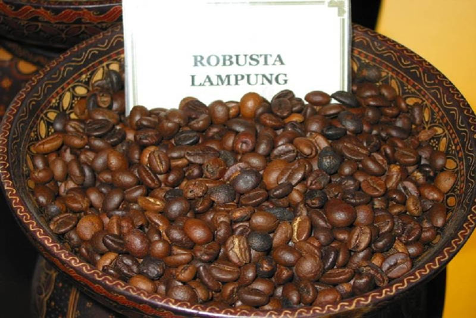
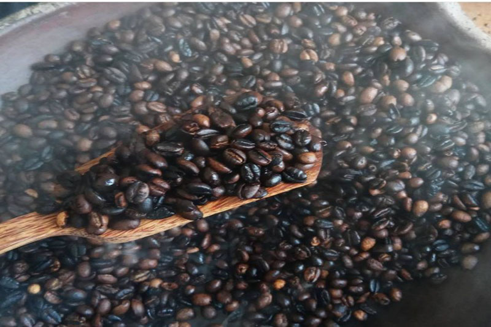
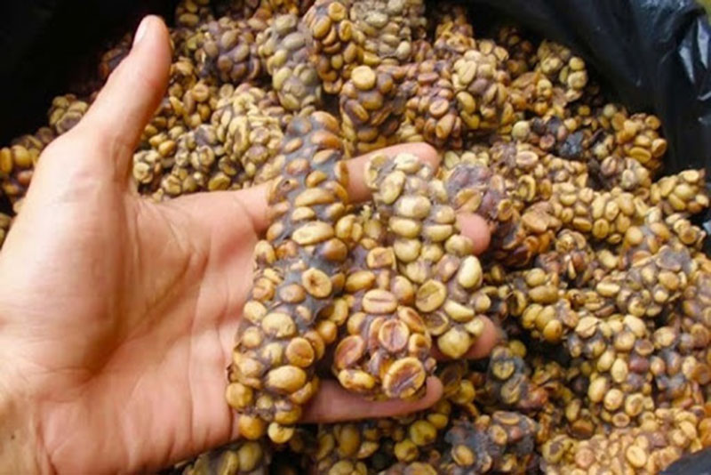

Etimologi

Kata kopi sendiri awalnya berasal dari bahasa Arab: قهوة qahwah yang berarti kekuatan,
karena pada awalnya kopi digunakan sebagai makanan berenergi tinggi.
Kata qahwah kembali mengalami perubahan menjadi kahveh yang berasal dari bahasa Turki dan kemudian berubah lagi menjadi koffie dalam bahasa Belanda.
Penggunaan kata koffie segera diserap ke dalam bahasa Indonesia menjadi kata kopi yang dikenal saat ini.
Sejarah

Benih kopi arabika untuk pertama kalinya ditanam di pulau Jawa, tepatnya di daerah Kedawung,
sebuah perkebunan berlokasi dekat dengan Batavia (kelak menjadi Jakarta)oleh pemerintahan Belanda pada tahun 1696,
dibawa langsung oleh pimpinan kapal dagang Belanda, Adrian van Ommen dari Malabar, India. Usaha ini mengalami kegagalan, karena bencana gempa bumi dan banjir,
yang terjadi pada masa itu. Pemerintahan Belanda melakukan usaha penanaman kedua dengan mendatangkan setek pohon kopi dari Malabar dan mengalami kesuksesan,
dan kopi yang dihasilkan berkualitas sangat baik sehingga dijadikan bibit bagi semua perkebunan yang dikembangkan di Indonesia.
Pemerintah Belanda akhirnya meluaskan areal budi dayanya ke Sumatra, Sulawesi, Bali, Timor dan pulau-pulau lainnya di Indonesia.
Pada tahun 1706, saat kopi tumbuh dengan lambak di Jawa, oleh pemerintah Belanda, benih kopi yang tumbuh di bantaran Ciliwung,
dikirimkan ke kebun botani di Amsterdam untuk dilakukan penelitian, dimana hasilnya, kopi tersebut berkualitas bagus.
Pada era Tanam Paksa atau Cultuurstelsel sekitar tahun (1830 — 1870) di masa penjajahan pemerintah Belanda di nusantara,
mereka membuka sebuah perkebunan komersial pada koloninya di Hindia Belanda, khususnya di pulau Jawa, pulau Sumatra dan sebagian Indonesia Timur.
Jenis kopi yang dibudidayakan adalah arabika yang didatangkan langsung dari Yaman. Pada awalnya pemerintah Belanda menanam kopi di daerah sekitar Batavia (Jakarta),
Sukabumi, Bogor, Mandailing dan Sidikalang. Kopi juga ditanam di Jawa Timur, Jawa Tengah, Jawa Barat, Sumatra, Sulawesi, Timor dan Flores.
Status Industri

Kopi dari Indonesia diekspor ke berbagai negara di dunia, antara lain:
- Serikat, sebanyak 67,3 ton
- Jerman 42,6 ton
- Malaysia 39 ton
- Italia 35,8 ton
- Jepang 35,4 ton
- Rusia 24,2 ton
- Mesir 21,1 ton
- Inggris 18,4 ton
- Belgia 12,2 ton
- Kanada 4,3 ton dan
- Negara lainnya 112 ton
Di Indonesia, kopi robusta merupakan kopi yang terbanyak diproduksi, dan Lampung merupakan gudang kopi utama di Indonesia.
Robusta menggantikan kopi liberika. Walaupun ini bukan kopi yang khas bagi Indonesia, kopi ini menjadi komoditas ekspor yang penting di Indonesia.
Pasca-Kemerdekaan, banyak perkebunan kopi yang ditinggalkan atau diambil alih oleh pemerintah yang baru. Saat ini,
sekitar 92 persen produksi kopi berada di bawah petani-petani kecil atau koperasi.
Kebiasaan masyarakat minum kopi di Indonesia masih belumlah sebesar bangsa Barat, dan masih sangat rendah jika dibandingkan dengan
negara-negara Asia lainnya, serupa Singapura dan Filipina, yang merupakan negara tujuan utama ekspor kopi Indonesia saat ini.
Kisaran konsumsi kopi di negara ini umumnya antara 1-3 cangkir sehari.
Jenis-jenis Kopi
Berikut merupakan jenis-jenis kopi di Indonesia!
Kopi Arabica

Kopi Arabika (Coffea arabica) diduga pertama kali diklasifikasikan oleh seorang ilmuan Swedia bernama Carl Linnaeus (Carl von Linné) pada tahun 1753. Jenis Kopi yang memiliki kandungan kafeina sebasar 0.8-1.4% ini awalnya berasal dari Brasil dan Etiopia.
Coffea arabica merupakan Spesies kopi pertama yang ditemukan dan dibudidayakan manusia hingga sekarang. Kopi arabika tumbuh di daerah di ketinggian 700–1700 m dpl dengan suhu 16-20 °C, beriklim kering tiga bulan secara berturut-turut.
Kopi arabika saat ini telah menguasai sebagian besar pasar kopi dunia dan harganya jauh lebih tinggi daripada jenis kopi lainnya.
Di Indonesia kita dapat menemukan sebagian besar perkebunan kopi arabika di daerah pegunungan toraja, Sumatra Utara, Aceh dan di beberapa daerah di pulau Jawa. Beberapa varietas kopi arabika memang sedang banyak dikembangkan di Indonesia antara lain kopi arabica jenis Abesinia,
arabika jenis Pasumah, Marago, Typica dan kopi arabika Congensis.
Kopi Robusta

Kopi Robusta (nama Latin Coffea canephora atau Coffea robusta) merupakan keturunan beberapa spesies kopi, terutama Coffea canephora.
Jenis kopi ini tumbuh baik di ketinggian 400-700 m dpl, temperatur 21-24° C dengan bulan kering 3-4 bulan secara berturut-turut dan 3-4 kali hujan kiriman.
Kualitas buah lebih rendah dari Arabika dan Liberika.
Kopi Liberika

Kopi Liberika adalah jenis kopi yang berasal dari Liberia, Dan Afrika Barat. Kopi ini dapat tumbuh setinggi 9 meter dari tanah.
Pada abad-19, jenis kopi ini didatangkan ke Indonesia untuk menggantikan kopi Arabika yang terserang oleh hama penyakit.
Kopi Luwak

Kopi luwak adalah seduhan kopi menggunakan biji kopi yang diambil dari sisa kotoran luwak/musang kelapa. Biji kopi ini diyakini memiliki rasa yang berbeda setelah dimakan dan melewati saluran pencernaan luwak.
Kemasyhuran kopi ini di kawasan Asia Tenggara telah lama diketahui, namun baru menjadi terkenal luas di peminat kopi gourmet setelah publikasi pada tahun 1980-an. Biji kopi luwak adalah yang termahal di dunia, mencapai USD100 per 450 gram.